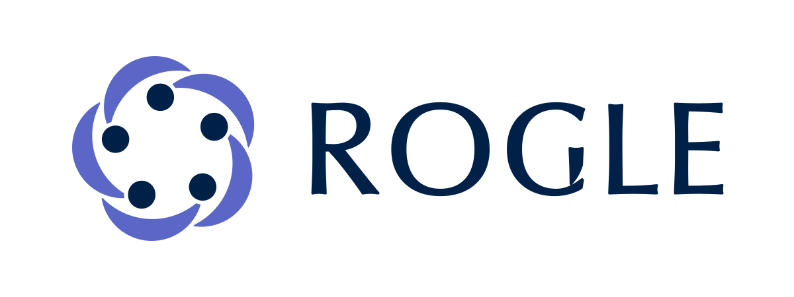
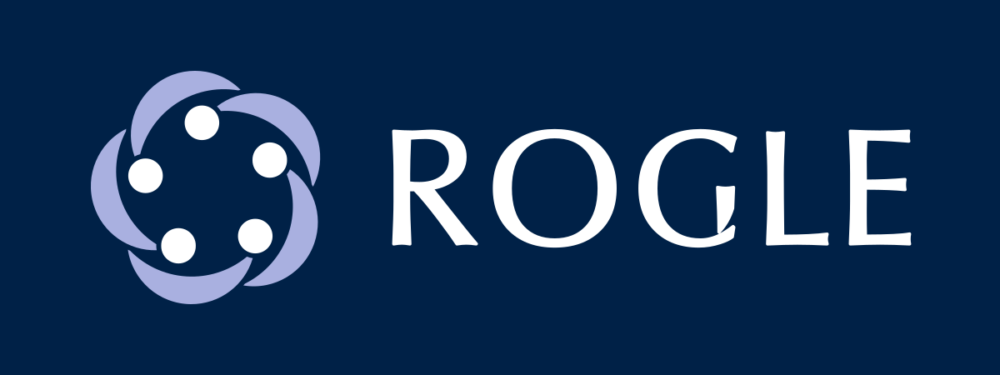
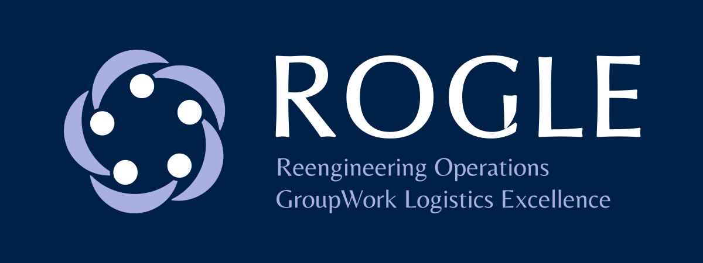
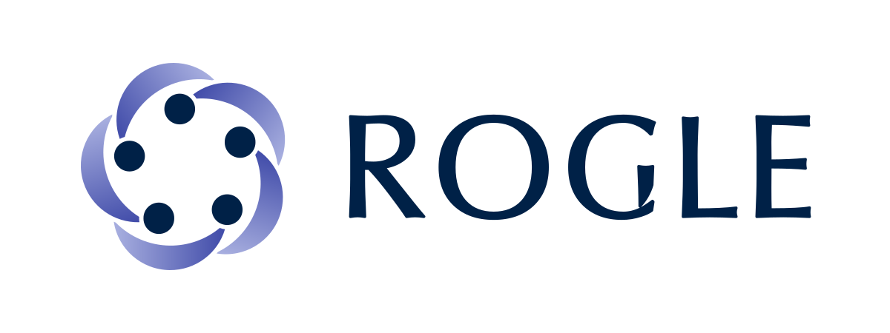
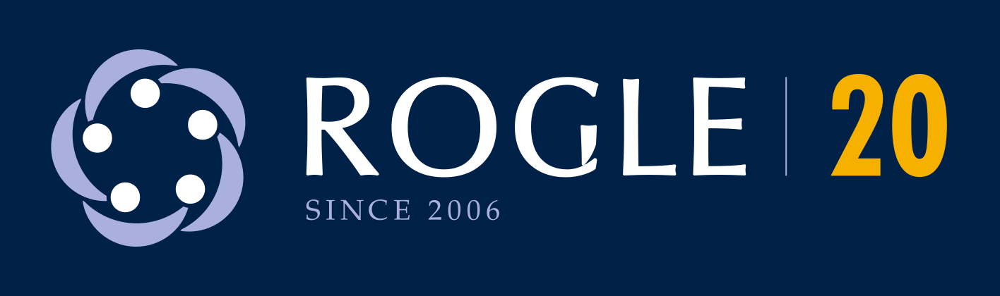

Brand
Everything you need to use the ROGLE brand: logos, colours, typefaces, rules, templates and videos. Files download only when you press them.
What the brand is
In Valencian, rogle is a circle of people, and “fer rogle” means to gather in a circle. The symbol shows five people in a circle, each embracing the group with a crescent. The crescents turn: they express group work (GroupWork) and the continuous cycle of operations improvement (Reengineering Operations). There are five people because the group grows.
The group has worked since 2006. In 2026 it turns 20, and the brand includes 20th-anniversary versions.
Current brand for now: alternative A. The group has used it since 1 October 2026. It still needs the approval of the UPV Communication Area (imagen@upv.es). If it does not come, the group can go back to alternative C or B.
Logos
Each logo comes as SVG (vector, the original), PDF and PNG (double resolution, transparent background). Previews on a blue background are versions for dark backgrounds.










Colour
The palette uses Oxford Blue and three indigos. Amber only goes on Oxford Blue. Press a value to copy it. The CMYK values are those of the print kit (approximate, FOGRA39 profile): for printing, use the kit.
Oxford Blue
People of the symbol, name, text and backgrounds.
- HEX
#002147 - RGB
0, 33, 71 - CMYK
100, 87, 43, 47
- HEX
Indigo
Descriptor, links and supporting headlines.
- HEX
#3F4AA8 - RGB
63, 74, 168 - CMYK
86, 75, 0, 0
- HEX
Medium indigo
Half-moons in the positive version.
- HEX
#5B67C7 - RGB
91, 103, 199 - CMYK
73, 62, 0, 0
- HEX
Light indigo
Half-moons and descriptor in the negative version. Never text on white.
- HEX
#A9B0E0 - RGB
169, 176, 224 - CMYK
37, 30, 0, 0
- HEX
Amber
Only the number 20 and rules, always on Oxford Blue.
- HEX
#F5B000 - RGB
245, 176, 0 - CMYK
2, 34, 96, 0
- HEX
UPV grey 431
Group name in the UPV institutional signature.
- HEX
#5B6770 - RGB
91, 103, 112 - CMYK
63, 47, 40, 28
- HEX
White
Background and negatives.
- HEX
#FFFFFF - RGB
255, 255, 255 - CMYK
0, 0, 0, 0
- HEX
Separator
Line between the UPV mark and the ROGLE mark.
- HEX
#CFCFCF - RGB
207, 207, 207 - CMYK
not defined
- HEX
Typefaces
The brand has two rules, depending on the medium.
- Documents and slides: Palatino and Gill Sans. Palatino is used for text and for every title, in bold. Gill Sans is only for secondary text (labels, footers, table heads). They are commercial fonts; without them, their free clones are used, TeX Gyre Pagella (GUST licence) and Gillius ADF.
- Web: Poppins and Inter. This website uses Poppins (headlines, bold) and Inter (text, menu and labels). They are the UPV web fonts and carry the SIL OFL 1.1 licence. Documents and slides keep Palatino and Gill Sans.
- Poppins and Inter (web)
Original web fonts (TTF) with the SIL OFL 1.1 licence.
- TeX Gyre Pagella and Gillius ADF (fallback)
Free clones of Palatino and Gill Sans for documents, with their licences.
Licences of the fonts of this website: Poppins (OFL 1.1) and Inter (OFL 1.1).
Usage rules
A summary of the brand rules. The full specification is in the brand manual.
Clear space
Leave free space around the mark equal to 0.25 times the height of the symbol.
Minimum sizes
Symbol: 16 px on screen and 5 mm in print (up to 48 px, use the favicon). Horizontal: 160 px or 30 mm wide. With descriptor: 320 px or 60 mm.
Together with UPV
The UPV mark goes on the left and ROGLE on the right, at the same height, separated by a line. ROGLE is never larger than UPV. The UPV mark is never modified.
Colour
Amber only goes on Oxford Blue. Oxford Blue and indigo never touch: white space separates them. The gradient is for screens only.
Not stretched, not split
The symbol and the name form one unit with fixed proportion and spacing. Do not separate or stretch them.
What not to do
Do not change the colours, add shadows or effects, rotate the mark, place it on low-contrast backgrounds or use amber on white.
Downloadable templates
Word and PowerPoint
For Office on Mac and Windows. They use Palatino and Gill Sans MT; if missing, Office substitutes them.
- PowerPoint (template)
Slide master and 91 consulting-style layouts, with five section-tracker variants.
- Office theme (.thmx)
Brand colours and fonts for Word and PowerPoint.
- Word: academic paper
Cover with QR code, “How to cite”, key points and abstract.
- Word: working paper
Technical report with the UPV institutional signature on the cover.
- Word: wide margin
Publication details and notes in the right margin.
- Word: letter
A4 letter with letterhead and a footer with the group's address.
Letter, report, slides and poster
Each ZIP keeps the folder structure of the template, because its paths are relative. Unzip it and follow the README in its folder.
- Letter (LaTeX)
A4 letter with LuaLaTeX. Includes the template, its README and the logos and styles it uses.
- Technical report (Quarto + PDF)
template.qmd with header, cover page, bibliography and a sample figure.
- Slides (Reveal.js and Beamer)
Quarto template with Reveal.js and Beamer themes, UPV logos and five section trackers.
- Poster (Typst)
Scientific poster with Typst. Includes the logos it uses.
Styles for Quarto and LaTeX
- _brand.yml (Quarto)
Colours, typography and logo for Quarto. Logos are read from the brand/logos folder of the kit.
- rogle-colors.sty (LaTeX)
Brand colours for LaTeX.
- rogle20-fonts.sty (LaTeX)
Palatino and Gill Sans with free fallbacks.
Complete print kit
This is the package to hand to a printer or a sign maker: every logo as SVG, PDF (RGB and CMYK), EPS, DXF and PNG, the palette and the typefaces.
- Complete print kit (alternative A)
SVG, RGB and CMYK PDF, EPS, DXF and PNG of every logo; palette (ASE, GPL, CSV, PDF); fonts and catalogue. The package to hand to a printer.
Videos and animated logo
Brand presentation videos, landscape and portrait, with music and with voice-over, and the animated logo as GIF and MP4. The files weigh several megabytes: they download when you press them.
- Presentation video, landscape (with music)
1920 × 1080, 75 seconds. Screens and projection.
- Presentation video, landscape (with voice-over)
A synthetic voice explains each scene and the music ducks while it speaks.
- Presentation video, portrait (with music)
1080 × 1920. Social media and mobile.
- Presentation video, portrait (with voice-over)
Portrait version with voice-over.
- Animated logo: spin (GIF)
The symbol spins and “ROGLE” appears.
- Animated logo: spin (MP4)
The symbol spins and “ROGLE” appears.
- Animated logo: entrance (GIF)
The symbol bounces and the name slides in from the left.
- Animated logo: entrance (MP4)
The symbol bounces and the name slides in from the left.
- Animated logo: “Fer rogle” (GIF)
The five people form the circle.
- Animated logo: “Fer rogle” (MP4)
The five people form the circle.
- Animated logo: 20th anniversary (GIF)
A counter goes from 2006 to 2026 on Oxford Blue.
- Animated logo: 20th anniversary (MP4)
A counter goes from 2006 to 2026 on Oxford Blue.


Full brand manual
The manual with all versions, uses and decisions is published on this website (in Spanish).